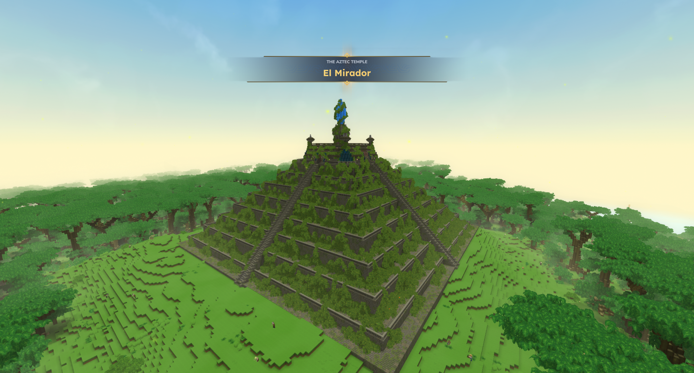
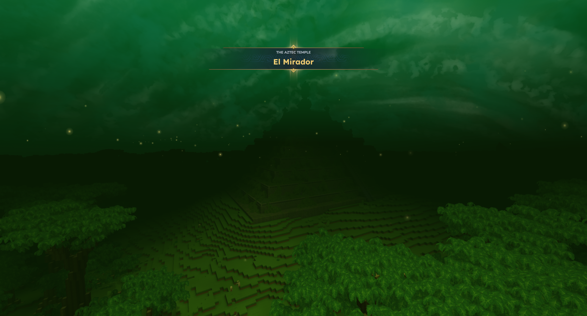
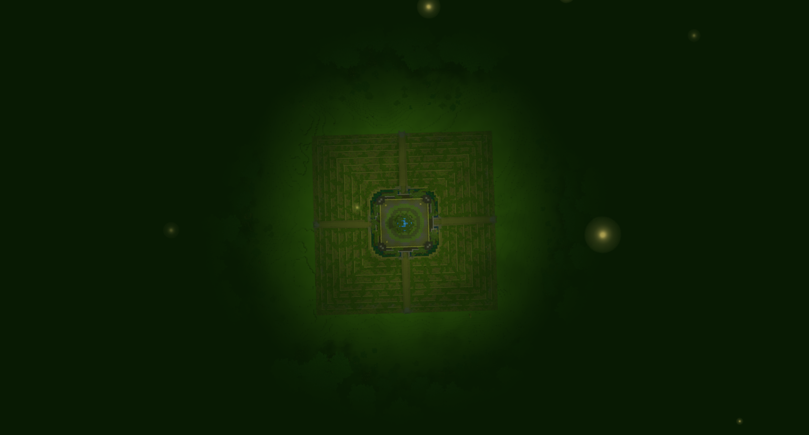
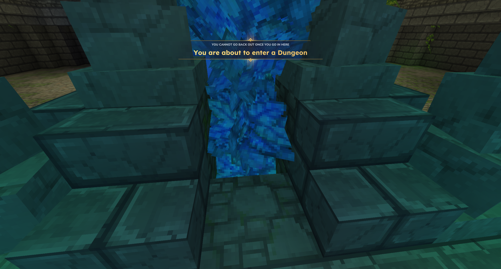
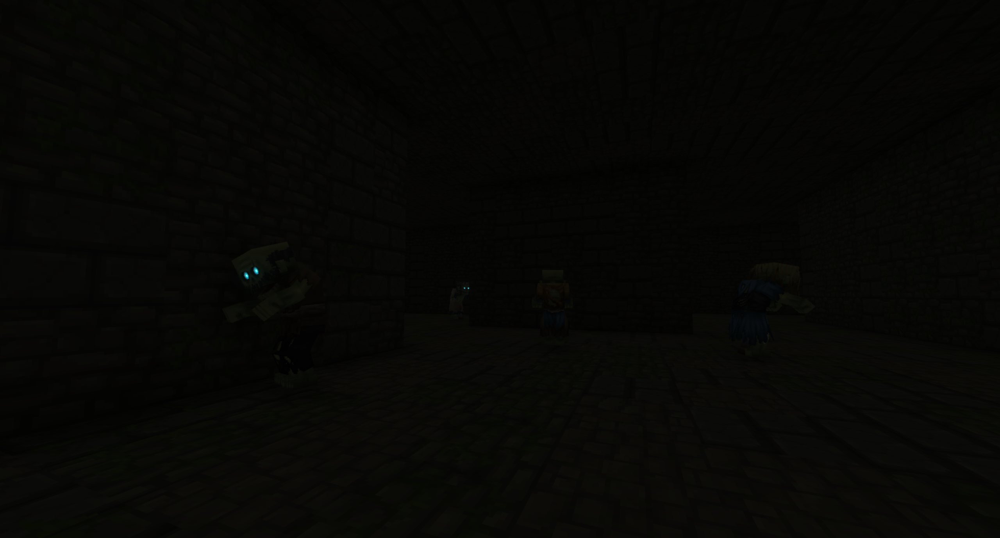
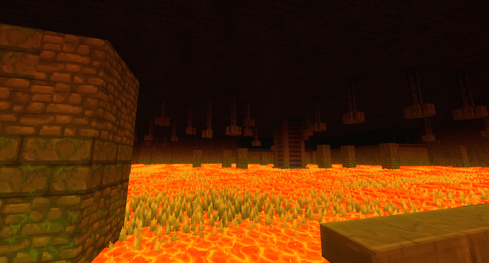
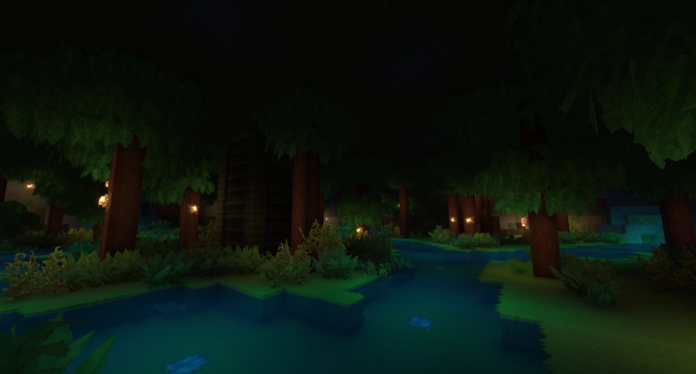
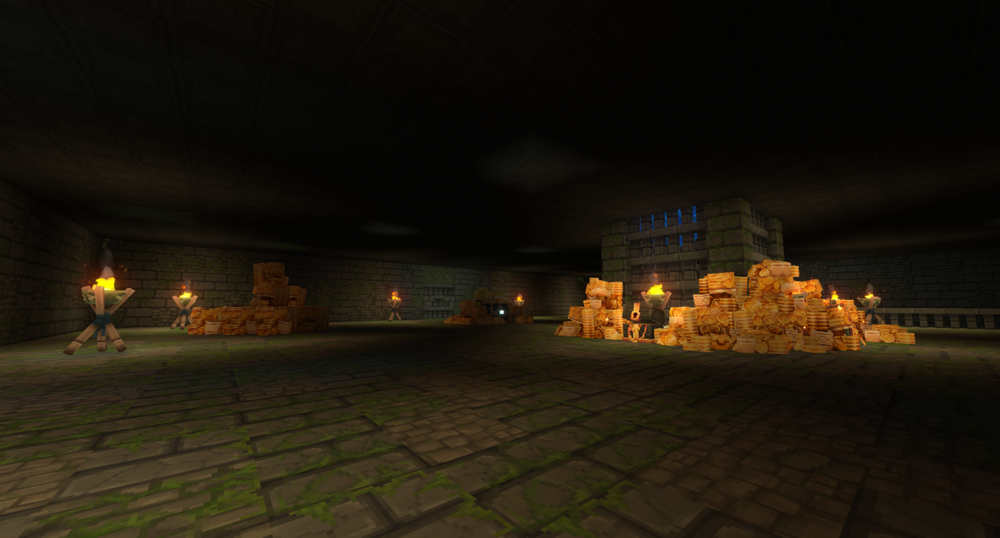

Deep within the untamed heart of the jungle lies El Mirador, the fabled Aztec Temple. Rising above a vast, calculated clearing where the dense canopy has been strictly cut back, this colossal stepped monument hides a perilous four-level gauntlet designed to test the resolve of any adventurer daring to cross its threshold.
El Mirador

| Location Information | |
|---|---|
| Coordinates | X: 617, Z: 787 |
| Area Type | Rural Ruins |
| Mob Threat | Very High |
| Bandit Threat | High |
| Number of Chests | 19 |
| Water Source | Yes |
| Clean Water Source | No |
| Fireplace | No |
| Chef's Stove | No |
| Workbench | No |
| Available Loot | ||
|---|---|---|
| 🍎 Food | ✗ | |
| 🥛 Civilian | Tier 1 | ✗ | |
| ✂️ Civilian | Tier 2 | ✗ | |
| 🛠️ Civilian | Tier 3 | 4 | |
| 🛡️ Military | Tier 1 | ✗ | |
| ⚔️ Military | Tier 2 | 4 | |
| 🏹 Military | Tier 3 | 11 | |
| 🌟 Legendary | ✔ | |
Lore
Deep within the untamed heart of the jungle lies El Mirador, the fabled Aztec Temple. Rising above a vast, calculated clearing where the dense canopy has been strictly cut back, this colossal stepped monument hides a perilous four-level gauntlet designed to test the resolve of any adventurer daring to cross its threshold.
The Surface Allure
From a bird's-eye view, El Mirador is a geometric marvel of overgrown stone terraces, perfectly centered in a wide patch of cleared wilderness. The temple's exterior holds a legendary reputation among treasure hunters—but not for the reason one might think. The outer terraces and the grand apex of the structure are heavily loaded with accessible supply chests, drawing crowds of opportunistic scavengers. Ironically, most of these visitors scale the ancient stairs strictly for the surface bounty, completely ignoring or fearing the true prize: the legendary chest buried at the absolute end of the subterranean complex.
Entering the Abyss
For those who seek true glory, the journey begins by stepping into a shimmering blue portal at the temple's core. A stark warning flashes before brave explorers: "You cannot go back out once you go in here." Once committed, the descent drops adventurers into a dark, unforgiving gauntlet divided into four distinct trials.
The Four Levels of the Gauntlet
- Level 1: The Big Maze – A pitch-black labyrinth of cold stone brick walls where glowing-eyed skeletal guardians patrol the shadows, waiting to ambush lost travelers.
- Level 2: The Lava Parkour – A massive, subterranean chamber filled with a boiling sea of jagged magma rocks and molten lava, requiring precise, high-stakes platforming under hanging ceiling pillars.
- Level 3: The Jungle Maze – An eerie, indoor wilderness where a dark forest canopy, murky waterways, and glowing flora obscure the path forward, blending natural chaos with architectural confinement.
- Level 4: The Small Maze – A final, tight network of claustrophobic stone corridors that serves as the ultimate barrier before players can access the inner sanctum.
The Inner Sanctum
Those who successfully navigate all four levels are finally granted entry into the grand loot room. This massive underground vault is illuminated by blazing ceremonial pyres and holds overflowing mounds of gold, ancient riches, and the coveted legendary chest itself—a reward meant only for the few who refuse to take the easy way out on the surface.
Will you settle for the scraps on the sunlit terraces, or will you brave the mazes and the molten depths to claim the true legend of El Mirador?
Gallery






